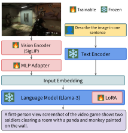

Abstract
Large multimodal models (LMMs) hold substantial promise across various domains, from personal assistance in
daily
tasks to sophisticated applications like medical diagnostics. However, their capabilities have limitations
in the
video game domain, such as challenges with scene understanding, hallucinations, and inaccurate descriptions
of video
game content, especially in open-source models. This paper describes the development of VideoGameBunny, a LLaVA-style model based on Bunny, specifically tailored
for
understanding images from video games. We release intermediate checkpoints, training logs, and an extensive
dataset
comprising 185,259 video game images from 413 titles, along with 389,565 image-instruction pairs that
include image
captions, question-answer pairs, and a JSON representation of 16 elements of 136,974 images. Our experiments
show
that our high quality game-related data has the potential to make a relatively small model outperform the
much
larger state-of-the-art model LLaVa-1.6-34b (which has more than 4x the number of parameters). Our study
paves the
way for future research in video game understanding on tasks such as playing, commentary, and debugging.
VideoGameBunny Model Architecture

VideoGameBunny is based on Bunny, an efficient and lightweight large multimodal
language model.
Dataset
We collect a diverse dataset of 185,259 high-resolution images from 413 video games sourced from YouTube
videos to
address the lack of game-specific instruction-following data. We generate various types of instructions for
these images
using different large multimodal models: short captions, long captions, image-to-JSON conversions, and
image-based
question-answering pairs. The image-to-JSON format provides structured, detailed descriptions of game
elements, while
the question-answering data is generated using both text-based models (LLama-3) and image-based models
(GPT-4o), where
we feed an image to a model and ask a question about its contents. This comprehensive dataset aims to
improve the
ability of open-source models to understand and respond to video game content.
| Task |
Generator |
Samples |
| Short Captions |
Gemini-1.0-Pro-Vision |
70,673 |
| Long Captions |
GPT-4V |
70,799 |
| Image-to-JSON |
Gemini-1.5-Pro |
136,974 |
| Question Answering |
Llama-3, GPT-4o |
81,122 |
We also use Gemini-1.5-Pro to create an evaluation set of 3,375 samples containig multiple choice
questions about the images in 10 different categories.
| Category |
Description |
Count |
| Action Understanding |
Recognizing and describing the actions taking place within the image. |
356 |
|
Sample: What action is the character in the foreground performing? |
|
| Anomalies and Glitches |
Identifying errors, bugs, glitches, or placeholder elements within the game environment.
|
223 |
|
Sample: Describe any anomalies or glitches present in the image. |
|
| Character Analysis |
Recognizing characters, understanding their roles, and interpreting their expressions and
poses.
|
312 |
|
Sample: What is Aloy's emotional state based on her facial expression? |
|
| Common Sense Reasoning |
Understanding the image using general knowledge and everyday logic. |
430 |
|
Sample: Based on the score and time remaining, which team is likely to win the
match?
|
|
| Gameplay Mechanics |
Understanding the rules and mechanics that govern the game. |
273 |
|
Sample: What game mechanic is most likely being utilized by the player character?
|
|
| OCR and UI |
Reading and interpreting on-screen text and user interface elements. |
334 |
|
Sample: What is written in the caption box at the bottom of the image? |
|
| Miscellaneous |
Any other type of question that does not fit into the previous categories. |
239 |
|
Sample: What material are the containers in the image primarily made of? |
|
| Scene Understanding |
Recognizing and interpreting the overall environment or setting in the image. |
566 |
|
Sample: The racetrack depicted in the image is set in what type of environment?
|
|
| Small Details |
Identifying and interpreting small but significant details within the image. |
356 |
|
Sample: What color is the jacket worn by the character in the foreground? |
|
| Spatial Reasoning |
Testing the ability to understand spatial relationships of objects present in the image.
|
286 |
|
Sample: What is the spatial relationship between the two red markers visible in the
image? |
|
Categories of questions in our dataset, along with a sample question for each category.
Model Training and Results
We instruction tune Bunny using image-instruction pairs that contain image captions, image-based
question
answering, and
image-to-JSON conversion.
Which type of data has the potential to improve the model’s performance?
We investigate which type of data has the potential to improve the model's performance. To do this, we
fine-tune the
Bunny model using a single dataset at a time, varying the subset size from 2K to 60K samples. We
perform this
fine-tuning only once for each dataset and subset size combination. Our goal is to observe overall
performance trends
rather than optimizing for the best performance. We continue increasing the subset size until we observe a
sharp decline
in performance, at which point we stop the experiment for that particular dataset. This approach allows us
to
efficiently explore the impact of different data types on the model's performance and identify which
datasets are most
promising for further investigation.
| Dataset |
2k |
5k |
10k |
20k |
40k |
50k |
60k |
| Short Caps. |
-0.3 |
+0.8 |
-35.5 |
-30.0 |
|
|
|
| Long Caps. |
+3.6 |
+3.8 |
+4.6 |
+6.8 |
+6.4 |
+6.3 |
+4.2 |
| IM-to-JS |
+3.8 |
+5.6 |
+7.6 |
+8.8 |
+9.8 |
+8.9 |
+11.7 |
| Llama-3 QA |
+1.5 |
+1.8 |
+2.5 |
+3.0 |
+6.1 |
+6.2 |
+2.6 |
| GPT4Q QA |
+4.5 |
+7.3 |
+6.1 |
N/A |
N/A |
N/A |
N/A |
Relative performance improvement (pp) of Bunny fine-tuned on different subsets of each
dataset. The image-to-JSON
dataset shows a strong positive trend, while the short captions dataset degrades performance.
Which type of data has the potential to improve the model's performance?
We explore different data mixing strategies to determine which approach improves the model's performance the
most. We
evaluate four strategies: Random, Equal, Stratified, and Weighted. The Random strategy involves sampling
without
replacement from all datasets combined. The Equal strategy selects an equal number of samples from each
dataset. The
Stratified approach mixes datasets based on video games to ensure a balanced representation of different
games. The
Weighted strategy prioritizes the three most effective datasets identified in our previous experiment:
image-based
question-answering (GPT-4o), long captions, and image-to-JSON.
We fine-tune the Bunny model on these mixture
strategies
with dataset sizes ranging from 2K to 30K samples. Each experiment is repeated three times with
different samples
to report mean performance and standard deviation. We stop at 30K samples due to limitations in our
smallest dataset
(GPT-4o with 10K samples), which would be exhausted for the Equal and Weighted strategies at this point.
| Size |
Random |
Equal |
Stratified |
Weighted |
| 2K |
76.7 ± 0.9 |
77.8 ± 0.8 |
78.0 ± 0.2 |
79.0 ± 0.6 |
| 5K |
79.2 ± 0.4 |
79.9 ± 0.4 |
80.0 ± 0.5 |
79.8 ± 0.6 |
| 10K |
79.8 ± 0.8 |
80.8 ± 0.6 |
80.8 ± 0.1 |
81.4 ± 0.5 |
| 20K |
81.5 ± 0.1 |
81.3 ± 0.7 |
81.8 ± 0.8 |
82.3 ± 0.9 |
| 30K |
81.8 ± 0.4 |
81.2 ± 1.1 |
81.6 ± 0.7 |
82.6 ± 0.3 |
Performance of models fine-tuned on a mixture of data with various strategies. The Weighted
strategy leads
to better performance with smaller dataset sizes, but as the size increases, both Equal and Weighted
strategies
perform similarly.
Looking at the average improvement per category reveals that most improvements come from game-related
categories
(Anomalies and Glitches, and HUD and UI).
| Category/Dataset Size |
2k |
5K |
10K |
20K |
30K |
| Action Understanding |
1.6 |
2.5 |
2.5 |
3.7 |
3.9 |
| Anomalies and Glitches |
23.4 |
33.0 |
33.2 |
34.0 |
32.0 |
| Character Analysis |
2.6 |
3.9 |
4.2 |
4.7 |
4.4 |
| Common Sense Reasoning |
3.7 |
4.2 |
3.8 |
4.3 |
4.0 |
| Gameplay Mechanics |
4.2 |
5.0 |
6.4 |
8.2 |
8.9 |
| HUD and UI |
9.3 |
12.9 |
16.5 |
18.9 |
21.0 |
| Miscellaneous |
7.2 |
7.9 |
9.6 |
9.9 |
9.8 |
| Scene Understanding |
-0.2 |
0.6 |
1.3 |
2.0 |
2.0 |
| Small Details |
0.3 |
1.2 |
2.4 |
3.4 |
3.0 |
| Spatial Reasoning |
5.3 |
6.2 |
7.1 |
7.8 |
7.4 |
Average improvement for different sizes for each category
How does VideoGameBunny perform compared to SOTA open-source models on
game understanding tasks?
We assess the effectiveness of fine-tuning a smaller model on game-specific data by comparing our method to
state-of-the-art open-source models. To do this, we fine-tune our model on a dataset of 50K
image-instruction samples
compiled from all previously introduced datasets. We then evaluate our model's performance against
LLaVA-1.6, a
state-of-the-art open-source model with 4.2 times more parameters. This comparison allows us to determine
how well our
approach of fine-tuning a smaller model on game-specific data performs compared to larger, more general
models on game
understanding tasks.
| Model |
Accuracy |
|
Model |
Accuracy |
| Bunny-1.1-Llama-3-8B |
73.3 |
|
LLaVA-v1.5-13b |
64.6 |
| VideoGameBunny |
85.1 |
|
LLaVA-v1.6-vicuna-13b |
71.7 |
| LLaVA-v1.5-7b |
61.3 |
|
LLaVA-v1.6-34b |
83.9 |
Performance of various models on the evaluation set (%).
Conclusion
We introduce a new instruction-following dataset, with 389,565 image-instruction pairs, specifically
designed for video
game understanding. We investigate the effectiveness of fine-tuning LMMs on different instruction-following
dataset
types and mixtures of them, and finally introduce VideoGameBunny, an
8B parameter model that outperforms a SOTA
model,
LLaVA-1.6-34B, on a game-related question answering benchmark.


Our dataset contains 389,565 image-instruction pairs that include image captions, question-answer pairs, and a JSON representation of 16 elements of 136,974 images.
Note: Click on the circles in the image to view detailed annotations.